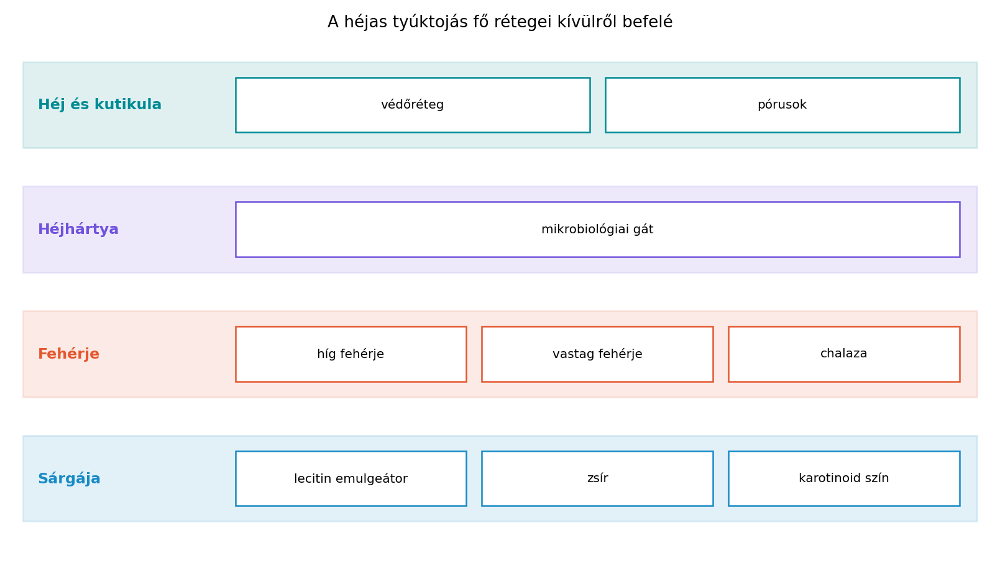
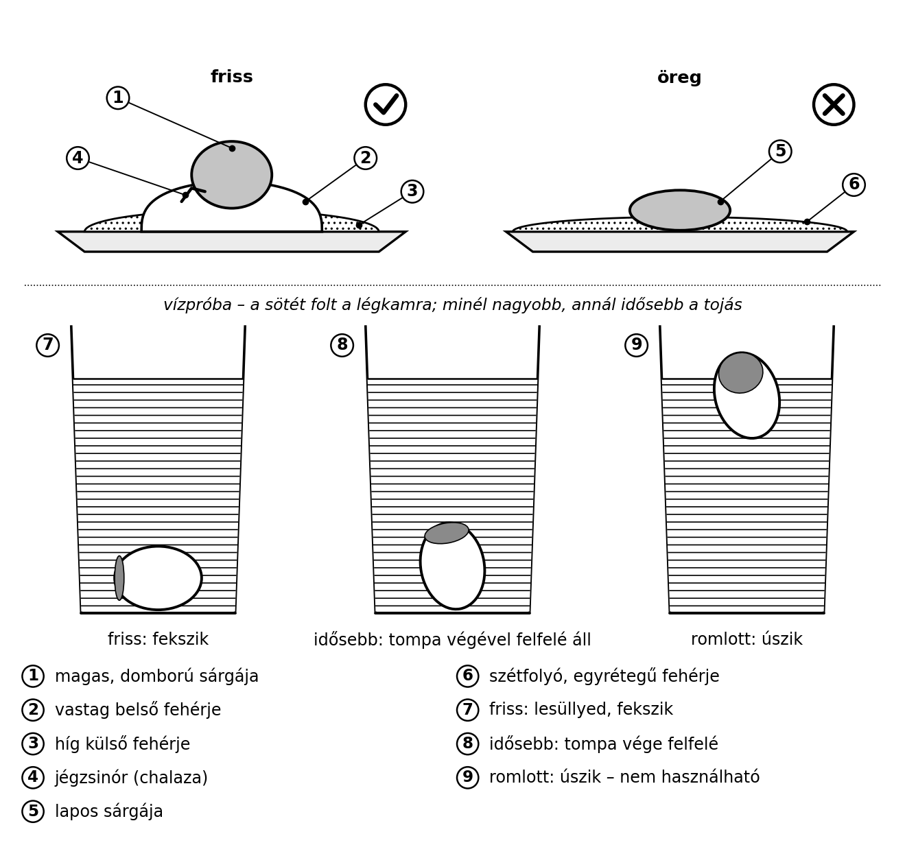

A hajnali kalács- és briósgyártás során a pék előveszi a tojást vagy tojáslevet, hogy a tésztát dúsítsa, a felületet lekenje, a krémet stabilizálja. Ha a tojást rosszul adagolja, a tészta száraz, tömör vagy éppen folyós lesz; ha a héjas tojást nem megfelelően kezeli, Salmonella kerülhet a termékbe; ha pedig a tojást nem jelöli allergénként, a vevő súlyos panasszal élhet. Ezért ezt az anyagot egyszerre kell számítási, mikrobiológiai, technológiai és jelölési oldalról ismernünk.
A héjas tyúktojás kívülről befelé haladva védőrétegekkel, emulgeáló sárgájával és fehérje-vízzel teli, biológiailag aktív csomag. A pék számára nemcsak „egy darab tojás”, hanem egy pontosan adagolható, de mikrobiológiailag érzékeny nyersanyag.

A sárgája lecitintartalma miatt természetes emulgeálóanyag, a fehérje hőre koaguláló, habveréskor levegőt tartó szerkezetet ad. A tojás a tésztában vizet, zsiradékot és fehérjét visz be, a felületen pedig fényes, aranysárga kérget alakít ki a tojásos kenés.
Héjas tojás. A sütőiparban elsősorban a tyúktojást használjuk; más fajok tojása különleges termék lehet, de a szabályozás és a gyakorlat a tyúktojásra épül. A héjas tyúktojás átlagos tömege 53–63 g, de a pontos méret tételenként eltér (ellenőrizendő: üzemi átvételi előírás). A teljes tojás ehető része a héj leválasztása után a tojáslé.
Tojáslé. A feltört, héj nélküli, kevert tojásfehérjét és sárgáját tartalmazó folyékony tojáskészítmény. A házilag feltört tojáslé összetétele a tyúktojás természetes arányait követi; az ipari tojáslé pasztőrözött, hűtött vagy fagyasztott formában kapható.
Tojásfehérje-lé. Csak a tojásfehérjét tartalmazó folyékony tojástermék. Elsősorban habképzésre, fehérjedúsításra, felületi bevonatokra használjuk; a sütés után hőkezelés nélkül maradó bevonathoz csak pasztőrözött változata használható (lásd a higiéniai szakaszt).
Sárgája-lé. Csak a tojássárgáját tartalmazó folyékony tojástermék. Emulgeálásra, színezésre, dúsításra, krémek és zsíros tészták stabilizálására alkalmas; a sárgája magas zsír- és lecitintartalmú.
Teljes tojáspor. A tojáslé pasztőrözése és porlasztva szárítása után kapott por. Vízben elkeverve tojáslét ad vissza; szárazanyag-tartalma általában 95–97% (ellenőrizendő: gyártói adatlap). A por hűtés nélkül tárolható, így raktározása egyszerűbb, mint a folyékony terméké.
Dúsított tojáspor. A szaknyelvben olyan tojásalapú por, amely a teljes tojásporhoz képest nagyobb sárgája- vagy zsírarányú, esetleg emulgeáló- vagy cukortartalommal, ízanyaggal kiegészített termék. A pontos összetételt a gyártói adatlap adja meg (ellenőrizendő: konkrét termék).
A tojás nagyjából 74–76% vizet, 12–13% fehérjét, 10–12% zsírt és 1% ásványi anyagot tartalmaz; a pontos érték takarmány, fajta, tartási mód és tojásméret szerint eltér (ellenőrizendő: laboratóriumi mérés). A héj aránya a tojás tömegéből 10–12%, ezért az ehető tojáslé 88–90% körül alakul. Ezt a fajlagos ehető rész arányt használjuk a tojás-egyenérték számításhoz.
A tojás technológiai hatásai:
A felhasználás előtti gyors vizsgálat célja, hogy a hibás vagy romlott tojást kizárjuk. A részletes laboratóriumi vizsgálatot a Tojásvizsgálat alfejezetben tanuljuk.
Friss héjas tojás jelei:
Az alábbi ábra felső sora tányéron feltört friss és öreg tojást mutat oldalnézetben: a friss tojás sárgája magas, domború (1), körülötte vastag belső (2) és híg külső fehérjeréteg (3) látható, a jégzsinór (4) is felismerhető; az öreg tojás sárgája lapos (5), fehérjéje szétfolyó, egyrétegű (6). Az alsó sor a vízpróbát mutatja: a tojás tárolás közben vizet veszít, a tompa végén lévő légkamra megnő, ezért a tojás egyre jobban felemelkedik.

A vízpróbán a friss tojás a pohár alján vízszintesen fekszik (7), az idősebb a tompa végével – a légkamrával – felfelé fordulva áll (8), a romlott tojás úszik (9), és nem használható fel. A vízpróba csak gyors tájékoztatás: a repedt, szennyezett héjú tojást a próba eredményétől függetlenül ki kell zárni, és a vizes kézzel érintett tojás után kezet kell mosni (ellenőrizendő: a pékség tojáskezelési utasítása).
A tojáslé és tojáspor esetében a frissességet a fogyaszthatósági idő, a csomagolás épsége, a hűtési hőmérséklet és az érzékszervi vizsgálat jelzi. A tojáslé színe sárgás, szaga tojásra jellemző, állaga homogén; a tojáspor csomómentes, száraz, nem dohos.
Mikrobiológiai veszély. A nyers tojás és tojástermék elsősorban Salmonella kockázatot hordoz. A baktérium a tojáshéjra kívülről, de a tojás belsejébe is bekerülhet; a sérült héj, a meleg tárolás és a hosszú állásidő növeli a kockázatot. A pasztőrözött tojáslé és tojáspor előnye, hogy a hőkezelés a mikrobaszámot jelentősen csökkenti, de nem teszi lehetővé a higiéniai szabályok elhanyagolását.
Tojásmosás tilalma. A héjas tojást az üzemben nem szabad mosni, mert a mosás megsértheti a héj védő kutikuláját, és a mosóvíz a héj pórusain keresztül bejutva a tojás belsejébe viheti a kórokozókat. A tojást szárazon, letörölgetéssel sem szabad erőteljesen tisztítani; ha a technológia mégis megengedi a mosást, az csak meleg, folyóvizes, azonnali felhasználás előtti lépés lehet, az üzemi HACCP és a gyártói előírás szerint (ellenőrizendő: hatályos előírás és üzemi HACCP).
Nyers tojásfehérje mázban, bevonatban. Sütés után hőkezelés nélkül maradó mázban, bevonatban, krémben (például fehérjemáz, habmáz) csak pasztőrözött tojásfehérje-lé vagy tojásfehérjepor használható. Nyers héjas tojás fehérjéje csak olyan készítménybe kerülhet, amelyet utána a HACCP-tervben rögzítetten hőkezelünk; a kész mázat hűtve tároljuk, felhasználási idejét a HACCP-terv adja (ellenőrizendő: NÉBIH-útmutató, HACCP-terv).
Higiénia. Héjas tojás feltörése előtt kezet kell mosni, a munkafelületet és az edényt tiszta, elkülönített állapotban kell tartani. A feltört tojást azonnal fel kell dolgozni, vagy hűtőben tárolni; a héjat és a csomagolást az élelmiszer-térből el kell távolítani. A tojásos edényben hagyott maradékot ne öntsük vissza, mert a hosszú állásidő alatt a szobahőmérsékleten a mikrobák szaporodhatnak.
HACCP. A tojásfelhasználás lépéseit a pékség HACCP-tervében kell szerepeltetni. A kritikus pontok például a tojás átvétele, a tojáslé hűtött tárolása, a feltörés higiénikus körülményei, az átsütés és a késztermék hűtése. A táblázatban szemléltető, tanulási példákat adunk meg; a határértékeket az üzemi HACCP-terv és a hatósági útmutató szerint kell meghatározni (ellenőrizendő).
| Lépés | Veszély | Megelőzés/határ | Monitoring | Helyesbítés |
|---|---|---|---|---|
| Héjas tojás átvétele | Salmonella, sérült héj | Ép héj, hűvös tárolás | Szemlézés, hőmérséklet | Tétel kizárása, visszáru |
| Tojáslé tárolása | Mikrobaszaporodás | Hűtőtér ≤ 4 °C (szigorúbb üzemi cél), a termék ≤ 5 °C, lejárati idő | Hőmérséklet, dátum | Határtúllépésnél elkülönítés, a termék sorsáról döntés, dokumentálás |
| Feltörés, adagolás | Keresztszennyeződés, allergén | Elkülönített eszköz, kézmosás, jelölés | Szemrevételezés, sorrend | Tisztítás, sorrendmódosítás |
| Sütés | Salmonella nem pusztul el | 75 °C maghőmérséklet (ellenőrizendő) | Maghőmérés | Sütés meghosszabbítása, tétel kizárása |
| Hőkezelés nélküli máz, bevonat | Salmonella a nyers fehérjében | Csak pasztőrözött tojásfehérje vagy tojásfehérjepor; a kész máz hűtve | Alapanyag-azonosítás, hőmérséklet, dátum | Nyers fehérjés máz kizárása, a tétel sorsáról döntés, dokumentálás |
Allergén. A tojás a fogyasztók tájékoztatásáról szóló 1169/2011/EU rendelet II. melléklete szerint allergén összetevő. A tojást vagy tojásterméket a termék összetevői között – akár kenésre, akár bevonatra kerül – a jogszabály szerint kiemelten kell jelölni. Keresztszennyeződési kockázatot jelent a közös ecset, keverőtál, felület vagy a tojásos termék mellett tárolt más áru. A „nyomokban tojást tartalmazhat” jelölés csak akkor használható, ha a kockázat valós, és a technológia nem tudja azt kizárni; a jobb megoldás az elkülönítés. A tojásmentes termékeknél a tojásos kenést ne használjuk, és a sütőlapot, formát, ecsetet tisztítsuk le, mielőtt mentes terméket készítünk.
A receptek gyakran héjas tojást adnak meg, de az üzemi gyakorlat a tojáslevet vagy tojásporot részesíti előnyben, mert az adagolás gyors, homogén és higiénikusabb. A tojás-egyenérték kiszámítása azt jelenti, hogy meghatározzuk, mennyi folyékony tojáslé vagy tojáspor + víz felel meg a receptben megadott héjas tojásnak vagy tojáslének.
Alapösszefüggések
ahol az ehető rész aránya, például 0,88 (ha a héj 12%). Az arány tételenként változhat, ezért átvételkor tömegmintát érdemes venni (ellenőrizendő: üzemi receptúra, beszállítói adat).
ahol a tojáslé szárazanyag-tartalma, a tojáspor szárazanyag-tartalma. A pótlandó víz:
Ha a gyártói visszahígítási arány ismert (például 1 rész por : 3 rész víz), akkor azt a szárazanyag-számítás helyett, azzal összhangban használjuk: 1 kg tojáslé = 0,25 kg por + 0,75 kg víz (tanulási példa, ellenőrizendő: gyártói adatlap).
Számítás. A következő három példa mutatja a leggyakoribb üzemi helyzeteket.
Adott: A recept 3,00 kg héjas tyúktojást ír elő. Az átvételi minta alapján a héj aránya 12%, az ehető rész .
Keresett:
Képlet:
Behelyettesítés:
Ellenőrzés: A héj tömege , ami 12% a 3,00 kg-ra nézve. Visszaszámolva kg. Tehát 2,64 kg tojáslé szükséges.
Adott: 7,50 kg pasztőrözött tojáslére van szükség. A tojáslé szárazanyag-tartalma , a teljes tojáspor szárazanyag-tartalma (ellenőrizendő: gyártói adatlap).
Keresett: és
Képlet: ,
Behelyettesítés:
Ellenőrzés: Az összeg , a por aránya , ami a példában a 0,24/0,96 szárazanyagaránynak felel meg. Tehát 1,875 kg tojáspor és 5,625 kg víz szükséges.
Adott: 2,00 kg tojásfehérje-lét kell kiváltani tojásfehérje-porral. A fehérje-lé szárazanyag-tartalma , a tojásfehérje-por szárazanyag-tartalma (ellenőrizendő: gyártói adatlap).
Keresett: és
Képlet:
Behelyettesítés:
Ellenőrzés: Az összeg ; a por visszaszámolva szárazanyagot ad, ami a folyékony fehérje 12%-nyi szárazanyagával egyezik. Tehát körülbelül 0,253 kg fehérje-por és 1,747 kg víz szükséges.
Hibás példa. Egy pék 1 kg tojáslevet 1 kg tojásporral helyettesített, és nem adott hozzá vizet. A tészta száraz, tömör lett, a tojásíz és a tojástartalom a tervezettnél sokkal nagyobb volt. Az ellenőrzésnél a tojáspor szárazanyag-tartalma 96%, a tojásléé 24% volt, tehát a por 1 kg-ban 0,96 kg szárazanyagot vitt be, ami 4 kg tojáslénak felel meg, így a recept teljesen elcsúszott.
Előírás. A tojás és a tojástermék a fogyasztók élelmiszerekkel kapcsolatos tájékoztatásáról szóló 1169/2011/EU rendelet II. melléklete szerint allergén összetevő. A sütőipari termékben minden tojás- vagy tojástermék-alapú összetevőt – beleértve a tojásos kenést is – a jelölésben fel kell tüntetni, kiemelve (ellenőrizendő: a rendelet aktuális szövege). Az élelmiszer-higiéniáról szóló 852/2004/EK rendelet szerint a tojás felhasználása során biztosítani kell a megfelelő hőkezelést, hűtést és higiéniai gyakorlatot (ellenőrizendő). A tojástermékek létesítményeire és előállítására a 853/2004/EK rendelet követelményei vonatkoznak (ellenőrizendő: aktuális szöveg). A Magyar Élelmiszerkönyv a tojás és tojástermékek minőségi jellemzőit is rögzíti (ellenőrizendő: a vonatkozó előírás száma és hatályossága). A héjas tojás mosása a sütőüzemben általában nem megengedett, mert a védőréteg sérül, és a mosóvíz a pórusokon keresztül bejuthat; ha a technológia mégis előírja, akkor a feltételeket az üzemi HACCP-tervnek kell rögzítenie (ellenőrizendő: hatósági állásfoglalás, üzemi előírás).
Egy pékség húsvét előtti kalácsrendelésre készült. A technológiai utasítás szerint a felületi kenőanyagot friss, házilag feltört tojásból készítették. A gyors munka közben az egyik dolgozó a tojás feltörése után a kezét nem mosta meg, és ugyanazzal a kézzel, kesztyű nélkül csomagolta a már kisült, kihűlt kalácsokat. A következő héten egy vevő panaszkodott, hogy a fogyasztást követően hasi görcsei és hasmenése jelentkezett. A vizsgálat során a kalácson és a munkafelületen is Salmonella baktériumot mutattak ki (ellenőrizendő: a hatósági jegyzőkönyv; az eset itt tanulási példa). Az eset a kézmosás, a nyers tojás kezelése és a késztermék keresztszennyeződése közötti összefüggésre világított rá. A sütés a nyers termékben lévő Salmonellát elpusztítja, de a már megsült termék további hőkezelést nem kap, ezért a szennyeződés a sütés utáni érintéssel (csomagolás, sütés utáni kenés nyers tojással) jut a fogyasztóhoz. A tanulság: a tojás feltörése után kezet kell mosni, a nyers tojásos anyagot csak elkülönített, hűtött helyen szabad tárolni, és a sült készterméket kézmosás után, kesztyűvel vagy eszközzel szabad csak érinteni.
A tojás és tojástermék műveleti minősítése az érzékszervi, mérési és dokumentációs jellemzőket együtt jelenti.
Héjas tojás: ép héj, friss szag, vízben süllyed, feltörve magas sárgája és vastag fehérje. A sérült vagy repedt héjú tojást ki kell zárni.
Tojáslé: homogén, sárgás szín, tojásra jellemző szag, nincs savanyú vagy kénszag; hűtve ≤ 4 °C, lejárat előtt (ellenőrizendő: HACCP).
Tojáspor: száraz, csomómentes, sárgás, nem dohos; a visszahígított tojáslé a friss tojásléhoz hasonló állagú.
Késztermékben: a tojás adagolása a receptúra szerint, a bélszerkezet a dúsított pékáruknál rugalmas, finoman foszlós; a tojásos kenés egyenletes, fényes, repedezéstől mentes.
1. A héj arányának elhanyagolása. A recept héjas tojást ír, de a pék ugyanannyi tojáslevet mér, így kb. 12–14%-kal több tojást (és vizet) visz be, mint a recept (1/0,88 ≈ 1,14). A tészta lágyabb, ragadósabb lesz, a termék szétterülhet. Megoldás: a héjas tojás tömegét szorozzuk az ehető rész arányával (pl. 0,88), vagy a héj arányát méréssel, üzemi átlaggal vegyük figyelembe.
2. A tojáspor 1:1 arányú adagolása víz nélkül. A pék a tojáslevet azonos tömegű porral váltja ki, és elfelejti a vizet. A tészta száraz, tömény tojásízű lesz, az összetétel a recepttől eltér. Megoldás: szárazanyag- vagy gyártói arányból számítsuk a por és a víz tömegét.
3. Héjas tojás mosása. A pék „tisztasági okból” megmossa a tojást, de a mosóvíz a héjon át bejut, és Salmonella kerül a tojás belsejébe. Megoldás: csak száraz, ép héjú tojást használjunk, a feltörés előtti kézmosással; mosás csak az üzemi HACCP szerinti kivételes eljárásban.
4. Tojásos kenőanyag nyílt edényben, melegen tartva. A friss tojáslé órákig szobahőmérsékleten áll, benne a mikrobák elszaporodnak, és a kenés után a termékbe kerülnek. Megoldás: kis adagot készítsünk, a maradékot hűtve tároljuk, és a hosszú állásidőt kerüljük.
5. Allergénjelölés elmulasztása. A termék felületén tojásos kenés van, de a csomagoláson nem szerepel a tojás. Ez súlyos jelölési hiba, és allergiás vásárlónál egészségi kockázatot jelent. Megoldás: a tojás megnevezését az összetevők között, kiemelten kell feltüntetni.
A válaszok a Megoldásoknál találhatók.
1. feladat (A)
Add meg a héjas tojás, a tojáslé, a tojásfehérje-lé és a teljes tojáspor
definícióját. Melyik alkalmas emulgeálásra, és miért?
2. feladat (A)
Egy recept 250 g héjas tojást ír elő. Hány gramm tojáslevet mérjünk, ha
a héj aránya 12%?
3. feladat (B)
Egy üzemi tételhez 6,00 kg tojáslevet kell kiváltani teljes tojásporral
és vízzel. A tojáslé szárazanyag-tartalma 24%, a tojásporé 96%. Számítsd
ki a szükséges por és víz tömegét. Ellenőrizd a tömegek összegét.
4. feladat (B)
Egy kalácsrecept 5,00 kg héjas tojást ír elő, de a pékség csak
pasztőrözött tojáslevet használ. A héj aránya 11%. A tojáslé sűrűsége
1,03 kg/l. Hány liter tojáslevet kell kimérni?
5. feladat (C)
Tervezd meg a tojásfelhasználás HACCP-szempontú lépéseit egy krémmel
töltött, sütött pékáru gyártásánál. Nevezd meg a veszélyt, a
határértéket, a monitoringot és a helyesbítést legalább három lépésben.
A határértékeket tanulási példaként add meg.
6. feladat (D)
Egy pék a tojásos kenőanyagot friss tojásléből készíti, és a maradékot
egy nyitott edényben a sütő melletti asztalon hagyja 3 órán át, majd a
következő tételnél felhasználja. Nevezd meg a fő higiéniai kockázatot,
és írd le a helyes eljárást.
Héjas tojás: a használt tyúktojás héjjal együtt. Tojáslé: héj nélküli, fehérjét és sárgáját egyaránt tartalmazó folyékony tojástermék. Tojásfehérje-lé: csak fehérjét tartalmazó folyékony termék. Teljes tojáspor: pasztőrözött tojáslé porlasztva szárított, száraz por alakú terméke. Emulgeálásra a sárgája alkalmas, mert lecitintartalma a víz–olaj határfelületen stabil filmréteget képez.
Adott:
,
héj 12%,
.
Keresett:
Képlet:
Behelyettesítés:
Ellenőrzés: a héj
,
összegük 250 g. Tehát 220 g tojáslé szükséges.
Adott:
,
,
.
Keresett:
,
Képlet:
,
Behelyettesítés:
Ellenőrzés:
;
a por aránya
,
ami a szárazanyagaránynak felel meg. Tehát 1,50 kg tojáspor és 4,50 kg
víz szükséges.
Adott:
,
héj 11%,
,
.
Keresett:
Képlet:
,
Behelyettesítés:
Ellenőrzés: a térfogat sűrűséggel visszaszámolva
;
a héj tömege
,
ami 11%. Tehát kb. 4,32 l tojáslevet kell kimérni.
Például:
1. Tojáslé átvétele/tárolása: veszély a
mikrobaszaporodás; határ hűtőtér ≤ 4 °C (szigorúbb üzemi cél), a termék
≤ 5 °C; monitoring hőmérő, dátummal; helyesbítés határtúllépésnél
elkülönítés, a termék sorsáról döntés, dokumentálás.
2. Feltörés és krémkészítés: veszély Salmonella,
keresztszennyeződés; határ a hűtött munkatér, elkülönített eszköz, 30
perc munkavégzés (ellenőrizendő: HACCP); monitoring szemrevételezés,
hőmérséklet, idő; helyesbítés munka leállítása, tisztítás.
3. Sütés: veszély Salmonella túlélése; határ 75 °C
maghőmérséklet (ellenőrizendő); monitoring maghőmérés; helyesbítés sütés
meghosszabbítása, tétel kizárás.
4. Töltött késztermék hűtése: veszély
mikrobaszaporodás; határ: a készítés végétől 2 órán belül 20 °C alá,
további 4 órán belül legfeljebb 5 °C-ra hűljön, a tárolás legfeljebb 5
°C (szigorúbb üzemi cél: hűtőtér ≤ 4 °C) – tanulási érték
(ellenőrizendő: HACCP-terv, NÉBIH-útmutató); monitoring hőmérséklet és
idő; helyesbítés határtúllépésnél elkülönítés, a termék sorsáról döntés,
dokumentálás.
A fő higiéniai kockázat: a nyitott edényben, meleg környezetben tartott friss tojáslében a baktériumok (különösen Salmonella) gyorsan elszaporodhatnak. A 3 órás szobahőmérsékletű állás után a kenőanyag a sütés előtti nyers termékre kerül, és ha a sütési hőkezelés nem elégséges, a kórokozók túlélhetnek (ellenőrizendő: a HACCP-határérték). A helyes eljárás: kis adagot készítsünk, a maradékot fedett edényben, hűtve tároljuk, legfeljebb az üzemi utasításban megadott ideig; a meleg környezetben álló maradékot selejtezzük le.
A héjas tojás ehető része a tojáslé, amelynek héjaránya átlagosan 10–12%, így a tojáslé 88–90%-ot tesz ki. A tojáslé, tojásfehérje-lé és sárgája-lé folyékony, a teljes tojáspor és a dúsított tojáspor por alakú tojástermék. A tojást a sárgája lecitintartalma miatt emulgeálásra, a fehérje habképzése miatt lazításra, színre, kenésre és dúsításra használjuk. A tojás közvetlen élelmiszer-biztonsági kockázata a Salmonella; a héjas tojást nem szabad mosni, a tojáslevet hűtve és rövid ideig tároljuk, a sütésnek elég maghőmérsékletet kell elérnie. A tojás-egyenérték számítása képletekkel történik: a por tömege ; a pótlandó víz a folyadék és a por tömegének különbsége. A tojás az 1169/2011/EU rendelet szerint allergén, ezért a tojást és a tojásterméket a jelölésben kiemelten kell szerepeltetni. Továbbvitt eredmény: a tojás-egyenérték és a tojás technológiai hatásai a Nyersanyagok helyettesítésének számításai, a Dúsított tészta, dúsított péksütemények és kalácsfélék, a Tojással dúsított tészta: briós és foszlós kalács, az A mézeskalács nyersanyagai és a Tojásvizsgálat alfejezetekben kerülnek felhasználásra.